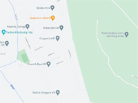

Tardosi vörösmészkõ bánya

Rövid kõzetfizikai leírás:
A tardosi kõbánya haszonkõzete vörös színû tömött mészkõ.A tardosi júra kori mészkõ nagy szilárdságú, fagyálló, kagylósan törõ, színe a vajszínûtõl a sötétvörösig változik. Nyomószilárdsága 130-160 N/mm2, vízfelvétele 0,1-0,3 v%. Jellemzõ tulajdonság, hogy faragható, jól csiszolható és fényezhetõ.
A kõzet kialakulásának sajátossága, hogy idõközönként a mész lerakódása megszûnt, helyette agyag és iszap réteg keletkezett. E réteg mentén a kõzet szétválasztható, az egyes agyagos rétegek 20-50 cm-enként követik egymást. E tulajdonsága miatt a lapravágás mindíg az ülepedés síkjával párhuzamosan történhet.
A tardosi "márvány" évezredek óta fontos építõanyaga hazánknak. Régészeti leletek bizonyítják, hogy már a római korban is bányászták és használták e követ: Sopronban, az egykori Scarbantia területén is találtak tardosi márványból készült sírkövet. A süttõ feletti bányákból mai napig vezet egy út a Duna-partra, melyet bizonyíthatóan még a rómaiak alakítottak ki.
Köztudott, hogy a középkorban is fontos szerepe volt e kõnek. Mátyás király visegrádi palotáját is ezzel díszítették, az ott ma is megtekinthetõ Mátyás-kút a hazai reneszánsz kiemelkedõ alkotása. Az esztergomi Bakócz-kápolna is tardosi mészkõböl épült. A tardosi mészkõ vörös színe miatt volt kedvelt díszítõköve a fõúri osztálynek. Ezzel magyarázható, hogy e követ nagyobb távolságokra is elszállították, így az ország számos területén elõfordulhat.
A kõzet felhasználása napjainkig folamatosnak mondható. A 19-20. századi fõvárosi építkezéseknél gyakran megtalálhatjuk mint lábazati kõ, illetve elterjedten használták lépcsõfokok faragására, mely a pesti bépházak esetében igen jellemzõ.
A tardosi tömött mészkõ felhasználása szerteágazó. Hagyományosan elsõsorban belsõ terekben díszítõkõként alkalmazták. Különleges vörös színét csak csíszolt formában mutatja. Idõjárásnak kitett körülmények között e jól ismert vörös szín megfakul és piszkos rózsaszínné válik. Szabad térben nem ajánlott fényezett felületû burkolóanyag beépítése.
Napjainkban vágott, stokkolt és antikolt (beltérben fényezett) felületû járófelület és falburkoló anyagként , kerti tipegõként, és vízarchitektúrák köveiként a legjellemzõbb.
Üzemeltetõ: Tardos-Stein Kõbánya Kft.
Képek
 Graffiti, 1589, Porta
Spetiosa, Pannonhalma
Graffiti, 1589, Porta
Spetiosa, Pannonhalma{kind=link}
{kind=link}
{kind=link}
{kind=link}
{kind=link}
{kind=link}
{kind=link}
{kind=link}
{kind=link}
{kind=link}
{kind=link}
Linkek